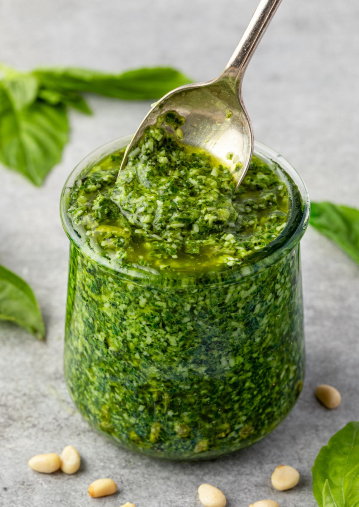

Home
Pesto

Description
This recipe will make creamy basil pesto sauce that can be used for anything!
This recipe can be used as is, or can be customized to the dish it is
used in or preference. Some ways to use pesto is with pasta, or you can
thin out the sauce and use it with salads or drizle it over meat dishes.
Ingredients
- 1/2 cup extra virgin olive oil
- 2 packed cups (about 2 big bunches) fresh basil leaves
- 3 garlic cloves, finely grated or pounded with a pinch of salt
- 1/4 cup pine nuts, lightly toasted and pounded
- 3 1/2 ounces Parmesan, finely grated plus more for serving (about 1 heaping cup)
- Lemon juice to taste
- salt
- Gather the Ingredients
- Combine basil leaves, oil, pine nuts, and garlic in a food processor or blender; puree until smooth
- Stir in Pecorino Romano cheese; season to taste with lemon juice, salt, and pepper